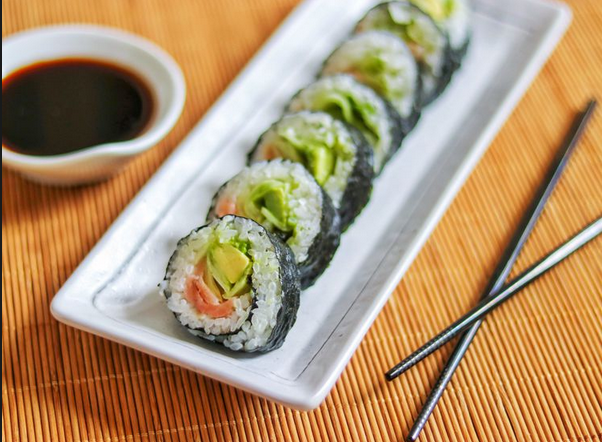

Smoked Salmon Sushi Roll

Homemade salmon roll made with sushi rice, nori, and smoked salmon. This is a very basic and easy recipe for making sushi. It might take a while to learn how to make a perfect roll, but you'll have fun trying! Add wasabi (Japanese horseradish) for a good kick!
Ingredients
- rice
- rice wine vinegar
- seaweed
- wasabi paste
- smoked salmon
- a cucumber
- an avocado
Steps
- Soak and cook the rice, then mix in the vinegar and cool in an even layer on a plate.
- Assemble the sushi rolls based on the detailed recipe below.
- Roll the sushi tightly and cut into eight pieces.
Home